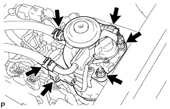

ДАТЧИК ОТСТОЙНИКА ТОПЛИВА > СНЯТИЕ |
| 1. СНИМИТЕ ТОПЛИВНЫЙ ФИЛЬТР В СБОРЕ (для моделей с подогревателем топлива) |
|  |
Отсоедините 2 шланга подачи топлива.
Отсоедините разъем датчика уровня жидкости и разъем подогревателя топлива.
Отверните 2 гайки и снимите топливный фильтр в сборе.
| 2. СНИМИТЕ ТОПЛИВНЫЙ ФИЛЬТР В СБОРЕ (для моделей с датчиком засорения) |
Отсоедините 2 шланга подачи топлива.
Отсоедините разъем датчика уровня и разъем датчика засорения.
Отверните 2 гайки и снимите топливный фильтр в сборе.
| 3. СЛЕЙТЕ ТОПЛИВО |
Ослабьте пробку сливного отверстия топливного фильтра и слейте топливо из топливного фильтра.
| 4. СНИМИТЕ КРЫШКУ ТОПЛИВНОГО ФИЛЬТРА |
Отсоедините зажим разъема датчика уровня от крышки топливного фильтра.
Выверните болт и снимите крышку топливного фильтра и прокладку топливного фильтра.
| 5. СНИМИТЕ ДАТЧИК УРОВНЯ |
Зажмите топливный фильтр в сборе в тисках между алюминиевыми пластинами.
С помощью плоскогубцев снимите датчик уровня.
Снимите прокладку датчика с датчика уровня.